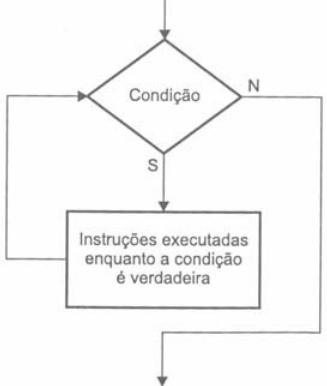
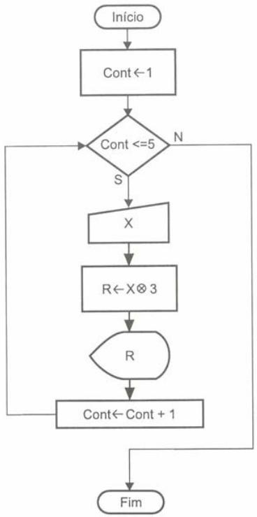
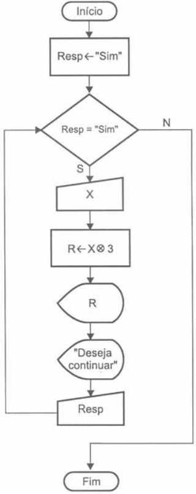
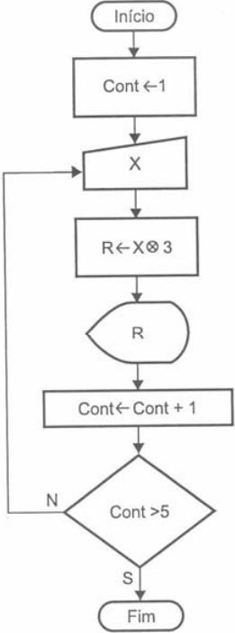
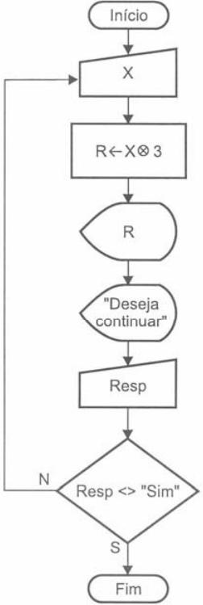
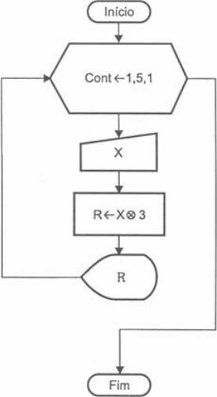
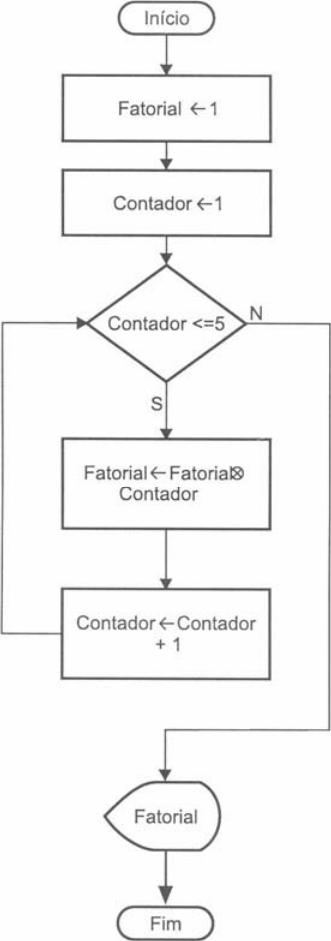
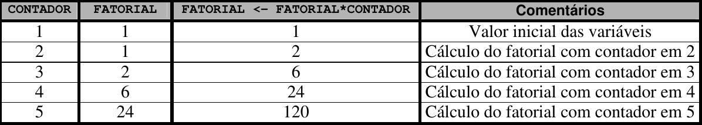

Lógica de programação
Aula 04 - Estruturas de controle: repetição
Igor Conrado Alves de Lima - prof.igor@microcamp.com.br
Motivação
Imagine um programa que peça a leitura de um valor para a variável X, multiplique esse valor por 3, atribua-o à variável de resposta R, e apresente o valor obtido, repetindo esta sequência por cinco vezes.
Repetindo 10 vezes.
Repetindo 50 vezes.
Repetindo 500 vezes.
Repetindo diversas vezes até enquanto o usuário quiser.
Introdução
Existem ocasiões em que é necessário efetuar a repetição de um trecho de programa um determinado número de vezes. Neste caso, poderá ser criado um looping que efetue o processamento de um determinado trecho, tantas vezes quantas forem nececessárias. Os loopings também são chamados de laços de repetição ou malhas de repetição.
Repetição do Tipo: Teste Lógico no Início do Looping
Teste Lógico no Início do Looping
Efetua um teste lógico no início de um looping verificando se é permitido executar o trecho de instruções subordinado a esse looping.
Em Português Estruturado nós temos:
enquanto (<condição>) faca
<instruções executadas enquanto condição for verdadeira>
fimenquanto
Teste Lógico no Início do Looping
Diagrama de blocos:

*Diferente da estrutura de decisão, aqui existe um retorno à condição após a execução do bloco de operações.
Teste Lógico no Início do Looping - Exemplo
Imagine um programa que peça a leitura de um valor para a variável X, multiplique esse valor por 3, atribua-o à variável de resposta R, e apresente o valor obtido, repetindo esta sequência por cinco vezes.
Teste Lógico no Início do Looping - Exemplo
Algoritmo:
- Criar uma variável para servir como contador com valor inicial 1;
- Enquanto o valor do contador for menor ou igual a 5, processar os passos 3, 4, 5, e 6;
- Ler um valor para a variável X;
- Efetuar a multiplicação do valor de X por 3, atribuindo o resultado à R;
- Apresentar o valor calculado contido na variável R;
- Acrescentar +1 a variável contador, definida no passo 1;
- Quando o contador for maior que 5, encerrar o processamento do looping.
Teste Lógico no Início do Looping - Exemplo
Diagrama de blocos:

Teste Lógico no Início do Looping - Exemplo
Português Estruturado:
algoritmo "Looping_1A"
var
X, R: inteiro
CONT: inteiro
inicio
CONT <- 1
enquanto (CONT <= 5) faca
leia(X)
R <- X * 3
escreva(R)
CONT <- CONT + 1
fimenquanto
fimalgoritmo
Teste Lógico no Início do Looping - Exemplo 2
E se tivéssemos que executar o problema anterior até enquanto o usuário quiser?
Teste Lógico no Início do Looping - Exemplo 2
Algoritmo:
- Criar uma variável para ser utilizada como resposta;
- Enquanto a resposta for "sim", executar os passos 3, 4 e 5;
- Ler um valor para a variável X;
- Efetuar a multiplicação do valor de X por 3, atribuindo o resultado à R;
- Apresentar o valor calculado contido na variável R;
- Quando a resposta for diferente de "sim", encerrar o processamento.
Teste Lógico no Início do Looping - Exemplo 2
Diagrama de blocos:

Teste Lógico no Início do Looping - Exemplo 2
Português Estruturado:
algoritmo "Looping_1B"
var
X, R: inteiro
RESP: literal
inicio
RESP <- "sim"
enquanto (RESP = "sim") faca
leia(X)
R <- X * 3
escreva(R)
escreva("Deseja continuar? ")
leia(RESP)
fimenquanto
fimalgoritmo
Repetição do Tipo: Teste Lógico no Fim do Looping
Teste Lógico no Fim do Looping
Nesse tipo de repetição o teste lógico é efetuado no fim do looping.
Nesse caso, o conjunto de instruções é executado pelo menos uma vez antes de verificar a validade da condição, diferente da estrutura enquanto.
Em Português Estruturado:
repita
<bloco de instruções>
ate (<condição>)
Teste Lógico no Fim do Looping - Exemplo
Pedir a leitura de um valor para a variável X, multiplique esse valor por 3, atribua-o à variável de resposta R, e apresente o valor obtido, repetindo esta sequência por cinco vezes.
Teste Lógico no Fim do Looping - Exemplo
Algoritmo:
- Criar uma variável para servir como contador com valor inicial 1;
- Ler um valor para a variável X;
- Efetuar a multiplicação do valor de X por 3, atribuindo o resultado à R;
- Apresentar o valor calculado contido na variável R;
- Acrescentar +1 a variável contador, definida no passo 1;
- Repetir os passos 2, 3, 4 e 5 até que o contador seja maior que 5.
Teste Lógico no Fim do Looping - Exemplo
Diagrama de blocos:

Teste Lógico no Fim do Looping - Exemplo
Português Estruturado:
algoritmo "Looping_2A"
var
X, R: inteiro
CONT: inteiro
inicio
CONT <- 1
repita
leia (X)
R <- X * 3
escreva(R)
CONT <- CONT + 1
ate (CONT > 5)
fimalgoritmo
Teste Lógico no Fim do Looping - Exemplo 2
Pedir a leitura de um valor para a variável X, multiplique esse valor por 3, atribua-o à variável de resposta R, e apresente o valor obtido, repetindo esta sequência até que o usuário encerre o processamento segundo a sua vontade.
Teste Lógico no Fim do Looping - Exemplo 2
Algoritmo:
- Iniciar o programa e o modo de laço repita;
- Ler um valor para a variável X;
- Efetuar a multiplicação do valor de X por 3, atribuindo o resultado à R;
- Apresentar o valor calculado contido na variável R;
- Solicitar do usuário se este deseja ou não continuar o programa;
- Repetir os passos 2, 3, 4 e 5 até que a resposta do usuário seja diferente de sim.
Teste Lógico no Fim do Looping - Exemplo 2
Diagrama de blocos:

Teste Lógico no Fim do Looping - Exemplo 2
Português Estruturado:
algoritmo "Looping_2B"
var
X, R: inteiro
RESP: literal
inicio
RESP <- "sim"
repita
leia(X)
R <- X * 3
escreva(R)
escreva("Deseja continuar? ")
leia(RESP)
ate (RESP <> "sim")
fimalgoritmo
Repetição do Tipo: Variável de Controle
Repetição do Tipo: Variável de Controle
Esse tipo de estrutura visa facilitar a construção de loopings que possuem um número finito de execuções.
Em Português Estruturado:
para <variável> de <início> até <fim> passo <incremento> faca
<instruções>
fimpara
Repetição do Tipo: Variável de Controle - Exemplo
Considere o mesmo problema anterior: "Pedir a leitura de um valor para a variável X, multiplicar esse valor por 3, atribuindo-o à variável de resposta R, e apresentar o valor obtido, repetindo esta sequência por cinco vezes".
Repetição do Tipo: Variável de Controle - Exemplo
Algoritmo:
- Definir um contador, variando de 1 a 5;
- Ler um valor para a variável X;
- Efetuar a multiplicação do valor de X por 3, atribuindo o resultado à R;
- Apresentar o valor calculado, contido na variável R;
- Repetir os passos 2, 3, 4 e 5 até que o contador seja encerrado.
Repetição do Tipo: Variável de Controle - Exemplo
Diagrama de blocos:

Repetição do Tipo: Variável de Controle - Exemplo
Português Estruturado:
algoritmo "Looping_2A"
var
X, R: inteiro
CONT: inteiro
inicio
para CONT de 1 ate 5 passo 1 faca
leia(X)
R <- X * 3
escreva(R)
fimpara
fimalgoritmo
Considerações entre tipos de estruturas de repetição
Considerações entre tipos de estruturas de repetição
- No decorrer da aula nós vimos três estruturas de repetição: enquanto, repita, e para.
- enquanto e repita são as estruturas mais versáteis: podem ser substituídas uma pela outra, além de poder substituir a estrutura para.
- Nem toda estrutura enquanto ou repita pode ser substituída por para.
- Todas estas estruturas podem ser encadeadas a depender do problema.
Hora de exercitar!

Exercício
Elaborar o algoritmo, diagrama de blocos e codificação em português estruturado de um programa que efetue o cálculo do fatorial do número 5 (5!).
Dica: !5 = 5 * 4 * 3 * 2 * 1, ou seja, !5 = 120.
Exercício
Algoritmo (fase 1)
- Inicializar as variáveis FATORIAL e CONTADOR com 1;
- Multiplicar sucessivamente a variável FATORIAL pela variável CONTADOR;
- Incrementar 1 á variável CONTADOR, efetuando o controle até 5;
- Apresentar ao final o valor obtido.
O que se quer dizer por "multiplicar sucessivamente"?
Exercício
Algoritmo (fase 2)
- Inicializar as variáveis FATORIAL e CONTADOR com 1;
- Repetir a execução dos passos 3 e 4 por cinco vezes;
- FATORIAL <- FATORIAL * CONTADOR;
- Incrementar 1 á variável CONTADOR;
- Apresentar ao final o valor obtido.
Exercício - Diagrama de blocos

Exercício - Teste de mesa

Exercício - Português Estruturado
algoritmo "Fatorial_A"
var
CONTADOR : inteiro
FATORIAL : inteiro
inicio
FATORIAL <- 1
CONTADOR <- 1
enquanto (CONTADOR <=5) faca
FATORIAL <- FATORIAL * CONTADOR
CONTADOR <- CONTADOR + 1
fimenquanto
escreva("Fatorial de 5 é = ", FATORIAL)
fimalgoritmo
Note que a instrução escreva() está exibindo duas informações na tela, uma mensagem e uma variável. Isso é feito utilizando uma vírgula para separá-las.
Exercício
Parte 2: Tente resolver o mesmo problema usando a instrução repita.
Parte 3: Tente resolver o mesmo problema usando a instrução para.